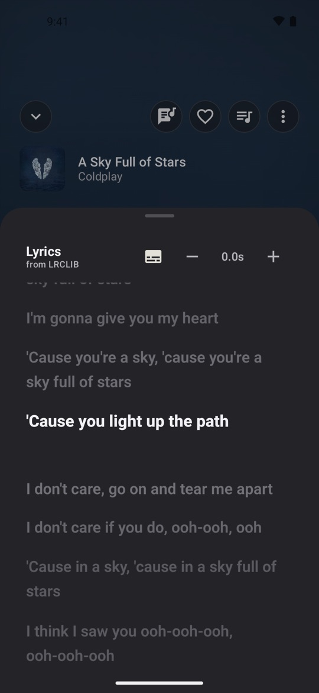
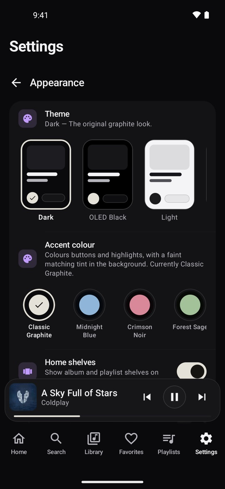

All of YouTube Music
Search songs, albums, artists and playlists, with charts, new releases and moods to explore. No account needed.
Whiplash is a free, open-source music player for Android. Stream YouTube Music, save songs offline, sing along with synced lyrics, and play your own files, all in one calm, dark, ad-free app.
Features
Built from scratch with Kotlin, Jetpack Compose and Media3, so it's fast, smooth, and keeps playing in the background.
Search songs, albums, artists and playlists, with charts, new releases and moods to explore. No account needed.
Save any song or whole album to play with no connection, and export tagged files to your phone's Download folder.
Lyrics that scroll with the song, from the open LRCLIB database, with per-song timing you can nudge.
Dark, OLED Black, Light, Liquid Glass or your own custom theme, with accent colours and four progress-bar styles.
Playlists, favourites, history, Speed dial and a Monthly Replay of your top songs, plus the music files already on your phone.
Gapless play, crossfade, speed control, sleep timer, smart autoplay and a queue that picks up right where you are.
A closer look
Quiet graphite surfaces, artwork-tinted colour, and big, clear controls. The music is the loudest thing on screen.


Optional sync
Sign in with Google and your playlists, favourites, history and settings follow you to a new device. Or don't sign in at all; everything works without an account.
FAQ
Yes. No subscription, no ads, no in-app purchases. It's open-source under the MIT licence, so you can read every line of code.
Tap Download for Android, open the latest release on GitHub, and download Whiplash.apk. Open the file on your phone and allow installing from your browser when Android asks. Updates install the same way, over the top, keeping your library.
No. Everything works without signing in. Google sign-in is only for the optional sync between devices, and you can switch the whole feature off in Settings.
No. Without sign-in, everything stays on your phone. With sync on, your library is saved in your own Google Drive, in a folder only the app can open. It never touches a server run by the developer. See the Privacy Policy.
Whiplash plays YouTube Music through the open-source NewPipeExtractor library, which Google Play doesn't allow. It's distributed on GitHub instead, like NewPipe and other open-source players.
Any phone running Android 8.0 or newer. Sync needs Google Play services; everything else works without them.
Download Whiplash and hear the difference a calmer app makes.